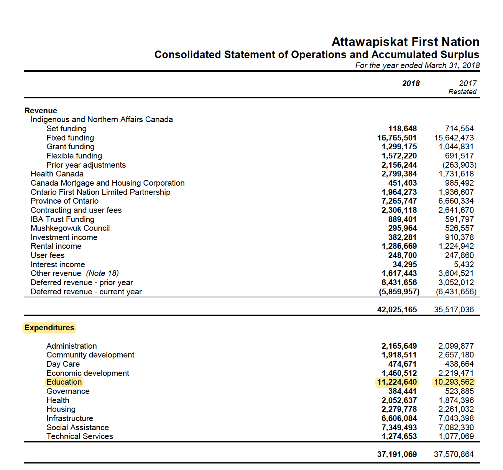

Narrowing this sustainable model into Attawapiskat, a First Nations community is highly desirable due to its remote location. Proving that this education model could be upheld across Canada no matter the remoteness. On account of the community’s remote location, air travel is the only used form of transportation. Therefore, air travel must be used in order to get the initial infrastructure established. The beneficial aspect of this model is that once the preliminary resources are transported and arranged, there will rarely be any need for future shipments unless there are technical issues. Considering the location’s remoteness this model will apply well as it uses an ethernet base rather than a wireless network which may be affected by signal issues.
The Attawapiskat community spent $11 million dollars from April 2017 to March 2018 on education, which means their community is certainly willing to invest in a good education for generations to come (Attawapiskat First Nation, 2018). Since this First Nations community values education, with a small amount of extra funding for initial implementation their community would presumably adopt this model comfortably. In this community, there is already an elementary school and high school in place therefore many First Nations children have the basis of knowledge to further their education.
 (Attawapiskat First Nation, 2018).Today, the Attawapiskat community has institutions such as an elementary school, high school, hospital, airport, police station, and an Inn. By incorporating this online education model in the community it will give the First Nations people the power and education they need to work in these establishments. By doing so, the Canadian government would not need to hire people from Western communities to fulfil job positions any longer. As Attawapiskat members will have the opportunity to work in these fields. This means that the First Nations can fully take back their land and become a non-waged based community once again. The Attawapiskat website identifies that there is a need for mental health clinicians, through this educational model the community will have someone to fulfil all the necessary jobs, therefore making them self-sufficient and less reliant on the Crown.
This model will also grant these Indigenous peoples the opportunity to stay in their community while continuing their traditional practice and all while gaining knowledge and experience through placements and co-operative educations. These placements can include fields like health services, hospitality and tourism, policing, and teaching which all can be accomplished on their land.